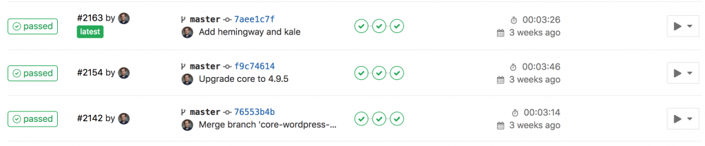
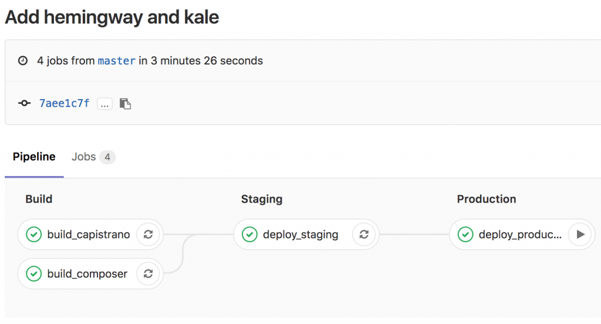

Last summer I did a series of posts in conjunction with a talk I gave at WPCampus on Lafayette’s WordPress deployment methodology. At the time the missing piece was a truly automated deployment. We implemented that at the end of August, but I never got around to writing it up until now. We retained our Capistrano methodology, but had GitLab execute the deployment from a container.
Containing Capistrano
In Rolling rocks downhill I described how we used Capistrano to deploy WordPress. The simplest way to automate the deployment and take the local developer out of the picture would be to have GitLab run the Capistrano deployment instead. This requires a few things:
- A user on the staging and production environments with permission to deploy, including proper SSH keys.
- A Docker container on the GitLab environment with the ability to execute a Capistrano deployment to said environments.
Deployment user
The user will need its own SSH public/private key pair. Add the public key to its authorized_keys on the stage and production environments. The private key gets saved as a secret variable in the GitLab project repository. In these examples it is named $SSH_PRIVATE_KEY.
Container
The Docker container needs to be able to do three things: run Capistrano, use git, and launch SSH. We start with a stock Ruby container and add a few things:
1 | FROM ruby:2.2 |
All the actual SSH configuration can be handled in the .gitlab-ci.yml configuration.
Staging a deployment
Here’s a sample .gitlab-ci.yml for deploying to stage:
1 | before_script: |
These are the same tasks that I run as a developer, but encapsulated in a gitlab-ci configuration file and runnable from a container. Every time I push to master, GitLab will spin up a container and redeploy the staging environment.
Pipelines
In GitLab a pipeline is a collection of jobs. Each commit to master will kick off a pipeline:

Each WordPress project pipeline will have four jobs:
- Sanity-check the Composer stack
- Sanity-check the Capistrano stack
- Deploy to the staging environment
- Deploy to the production environment
GitLab can display these schematically, so you see how the dependencies work together. The staging deployment won’t execute unless the sanity checks pass, and production won’t deploy unless staging was successful:

Production? Production
Production is defined as its own stage, and it comes after staging and build:
1 | stages: |
The key difference between production and staging is the addition of when: manual. With this in place, the pipeline will run up until the production deployment, and then stop. There’s an option on the interface, rendered as a Play button, to execute the deployment. This helps prevent inadvertent production deployments while queuing them up for the most opportune time.
Where next?
We’ve been using this for the entire academic year, and we haven’t had any problems. When WordPress 4.9.5 dropped we redeployed all twelve multisites across our environments in under fifteen minutes. It’s fast and it’s flexible. A next step forward could be running WordPress itself in Docker containers. We’re already doing that for our local development, using 10up’s excellent configuration. Instead of a Capistrano deployment, a push to GitLab could build a container which would then be deployed to a Docker Swarm. GitLab already supports this through its container registry. There’s plenty of engineering involved: building the Docker VMs, setting up Docker Swarm management tools, using nginx-proxy or Traefik to handle requests…